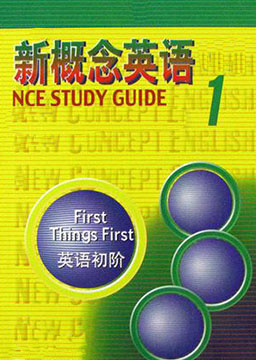

新概念英语1 (New Concept English 1)
作者：路易·亚历山大 (Louis·Alexander) [英国]
学习英语的敲门砖，这套经典教材一如既往地向读者提供一个完整的、经过实践检验的英语学习体系，使学生有可能在英语的四项基本技能——理解、口语、阅读和写作方面最大限度地发挥自己的潜能。专为中国的英语学习人士而改编，根据中国读者的需要增添了词汇表、课文注释、练习讲解和课文的参考译文。
难度：
初中
长度：
短篇
分类：
社会
第1课: 对不起! Excuse me！
第2课: 这是你的…吗？ Is this your…?
第3课: 对不起，先生。 Sorry, sir.
第4课: 这是你的…吗？ Is this your…?
第5课: 很高兴见到你。 Nice to meet you.
第6课: 它是什么牌子的？ What make is it?
第7课: 你是教师吗？ Are you a teacher?
第8课: 你是做什么工作的? What's your job?
第9课: 你今天好吗？ How are you today?
第10课: 看 Look at…
第11课: 这是你的衬衫吗？ Is this your shirt ?
第12课: 这/那…是谁的？这是我的/你的/他的/她的… Whose is this/that…? This is my/your/his/her…
第13课: 一件新连衣裙 A new dress
第14课: 你的…是什么颜色的？ What colours your…?
第15课: 请出示你们的护照。 Your passports, please.
第16课: 你是…吗？ Are you…?
第17课: 你好！ How do you do?
第18课: 他们是做什么工作的？ What are their jobs?
第19课: 又累又渴 Tired and thirsty
第20课: 看看他/她/它们！ Look at them!
第21课: 哪一本书? Which book?
第22课: 给我/他/她/我们/他们一… 哪一…？ Give me/him/her/us/them a… Which one?
第23课: 哪几只杯子？ Which glasses?
第24课: 给我/他/她/我们/他们一些…哪些？ Give me/him/her/us/them some… Which ones?
第25课: 史密斯太太的厨房 Mrs. Smith's kitchen
第26课: 它在哪里？ Where is it?
第27课: 史密斯太太的客厅 Mrs. Smith's living room
第28课: 它们在哪里？ Where are they？
第29课: 进来，艾米。 Come in, Amy.
第30课: 我应该做什么？ What must I do?
第31课: 萨莉在哪里？ Whereas Sally?
第32课: 他/她/它正在做什么？ What's he/she/it doing?
第33课: 晴天 A fine day
第34课: 他们在做什么？ What are they doing?
第35课: 我们的村庄 Our village
第36课: 在哪里…？ Where…?
第37课: 做书架 Making a bookcase
第38课: 你准备做什么？ What are you going to do?
第39课: 别摔了！ Don't drop it!
第40课: 你准备做什么？ What are you going to do?
第41课: 彭妮的提包 Penny's bag
第42课: 在那个…中/上有一个…吗？ Is there a… in/on that…?
第43课: 快点！ Hurry up!
第44课: 有些…吗？ Is/Are there any…?
第45课: 老板的信 The boss's letter
第46课: 你能…吗？ Can you…?
第47课: 一杯咖啡 A cup of coffee
第48课: 你喜欢/想要…吗？ Do you like/want…?
第49课: 在肉店 At the butcher's
第50课: 他喜欢…但他不喜欢… He likes…But he doesn't like…
第51课: 宜人的气候 A pleasant climate
第52课: 他们是哪国人？ What nationality are they?
第53课: 有趣的气候 An interesting climate
第54课: 他们是哪国人？ What nationality are they?
第55课: 索耶一家人 The Sawyer family
第56课: 他们通常做什么？ What do they usually do?
第57课: 很不平常的一天 An unusual day
第58课: 几点钟？ What's the time?
第59课: 就这些吗？ Is that all?
第60课: 你有 吗？ Do you have any…?
第61课: 重感冒 A bad cold
第62课: 他们怎么啦？ What's the matter with them?
第63课: 谢谢你，医生。 Thank you, doctor.
第64课: 不要…！你不应该…！ Don't …! You mustn't…!
第65课: 不是一个孩子 Not a baby
第66课: 几点钟？ What's the time?
第67课: 周末 The weekend
第68课: 几点钟？ What's the time?
第69课: 汽车比赛 The car race
第70课: 他们是什么时候在那里的？ When were they there?
第71课: 他讨厌透了！ He's awful!
第72课: 你什么时候…？ When did you…?
第73课: 到国王街的走法 The way to King Street
第74课: 他们干了什么？ What did they do?
第75课: 不舒适的鞋子 Uncomfortable shoes
第76课: When did you…？ 你什么时候…?
第77课: 要命的牙痛 Terrible toothache
第78课: 你什么时候…？ When did you…?
第79课: 卡罗尔的购物单 Carol's shopping list
第80课: 我必须去… I must go to the…
第81课: 烤牛肉和土豆 Roast beef and potatoes
第82课: I had… 我吃/喝/从事了…
第83课: 度假 Going on holiday
第84课: 你已经…了吗？ Have you had…?
第85课: 巴黎之春 Pairs in the spring
第86课: 你已经做了什么？ What have you done?
第87课: 车祸 A car crash
第88课: 你已经…了吗？ Have you…yet?
第89课: 待售 For sale
第90课: 你已经…了吗？ Have you…yet?
第91课: 可怜的伊恩！ Poor Ian!
第92课: 什么时候要…? When will…?
第93课: 我们的新邻居 Our new neighbour
第94课: 你过去/将在什么时候去…？ When did you/will you go to…?
第95课: 请把车票拿出来。 Tickets, please.
第96课: 确切的时间是几点？ What's the exact time?
第97课: 一只蓝色的小箱子 A small blue case
第98课: 它/它们是谁的？ Whose is it/are they?
第99课: 啊哟！ Ow!
第100课: He/She/They say that… 他/她/他们说…
第101课: 吉米的明信片 A card from Jimmy
第102课: 他/她/他们说他/她/他们… He/She/They say He/She/they…
第103课: 法语考试 The French test
第104课: 太、非常、足够 Too, very, enough
第105课: 错误百出 Full of mistakes
第106课: 我要你/他/她/他们…告诉他/她/他们… I want you/him/her/them to… Tell him/her/them to…
第107课: 太小了。 It's too small.
第108课: 它们的比较级和最高级是什么？ How do they compare?
第109课: A good idea 好主意
第110课: 它们的比较级和最高级是什么？ How do they compare?
第111课: 最昂贵的型号 The most expensive model
第112课: 它们的比较级和最高级是什么？ How do they compare?
第113课: 零钱 Small change
第114课: 我没有。 I've got none.
第115课: 敲敲门！ Knock, knock!
第116课: 每一、无、若干和一些 Every, no, any and some
第117课: 汤米的早餐 Tommy's breakfast
第118课: 你那时正在做什么？ What were you doing?
第119课: 一个真实的故事 A true story
第120课: 它已经发生了。 It had already happened.
第121课: 戴帽子的男士 The man in a hat
第122课: 关系代词 Who (whom), which and that
第123课: 澳大利亚之行 A trip to Australia
第124课: 关系代词 (Who) / (whom), (which) and (that)
第125课: 两个人一起喝茶 Tea for two
第126课: 不得不和不必要 Have to and do not need to
第127课: 著名的女演员 A famous actress
第128课: 他不可能…他肯定是… He can't be…He must be…
第129课: 时速70英里 Seventy miles an hour
第130课: 他那时不可能…他那时肯定是… He can't have been… He must have been…
第131课: 别那么肯定！ Don't be so sure!
第132课: 他可能是…他可能已经…我不敢肯定… He may be… He may have been… I'm not sure…
第133课: 爆炸性新闻！ Sensational news!
第134课: 他曾说他…他曾告诉我说他… He said (that) he…He told me (that) he…
第135课: 最新消息 The Latest report
第136课: 他(曾)说他…他(曾)告诉我说他… He said (that) he…He told me (that) he…
第137课: 美好的梦 A pleasant dream
第138课: 如果… If…
第139课: 是你吗，约翰？ Is that you, John?
第140课: 他想知道是否/为什么/什么/什么时候… He wants to know if/why/what/when…
第141课: 萨莉第一次乘火车旅行 Sally's first train ride
第142课: 有人邀请萨莉出席一个聚会。 Someone invited Sally to a party.
第143课: 林中散步 A walk through the woods
第144课: 还没有人来侍候他。 He hasn't been served yet.